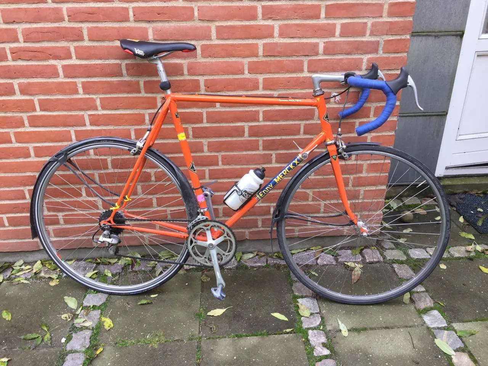
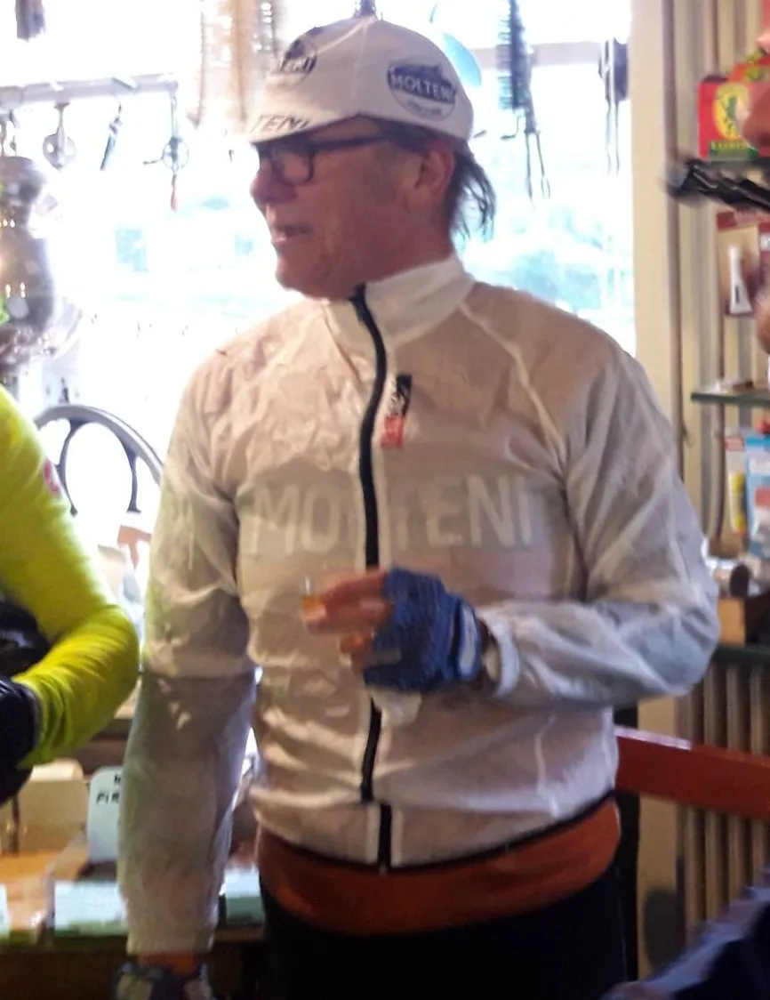

Midt i en skærmtid

Uanset programmet på TV Charlie, går Squadra Molteni nu ind i en periode med fast skærmtid. Det er blevet efterår og vinteren ligger på lur et sted derude – kun et par sving herfra.
Det bliver sort. Og vådt. Det bliver koldt – men det bliver også svedigt. Vi lover at føre an og med skærme, lys og lygte – og opsøge alle udfordringer på vores vej, lyder det fra Grane Maaløe, der ser frem mod den mørke vintertræningstid.

Det har været en lang sæson. Nu er sæsonen er slut – men træningen fortsætter. Der ligge nye udfordringer og venter i sæson 2018…
Derfor er Squadra Moltenis ryttere nu ved at gøre deres vinterlåger klar – til endnu en vinter på de kolde og våde landeveje.
Min vinterlåge er en Gazelle Champion Mondial i lækre Reynolds 531 rør. Den er blevet frisket op med en gang RAL 2008, fortæller Bjørnsteen, der allerede har været ude på et par lange træningsture i efterårsregnen.
Et stålfast princip … men
Selvom kalenderen kun viser 21. oktober, så er vinterlågerne med skærme kommet på vejen. Men det har ikke været helt lige til…. Squara Moltenis “Capitain de coach & mentor”, Finn Birk, har helt uhørt afviget fra et stålfast princip, som han ellers har holdt hårdt på i over 40 år:
Vinterlåger og skærme kommer ikke på landevejen før 1. november. Sådan har det altid været – og sådan bliver det ved med at være. Men … nu har det jo stort set regnet hver dag siden 1. juni. Og da en del af rytterne på Squadra Molteni skal ned og køre en af de helt store franske forårsklassikere – så har jeg giver lov til, at de kunne komme i gang med vintertræningen lidt før, lyder det fra Finn, der selv meget nødigt køre med skærme og den slags pjat.
